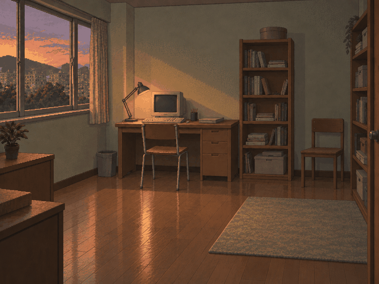

할 일이 먼저
캐주얼
한 화면에 한 판단.
이야기·자산 그래프를 한눈에 봅니다.
별도 캐주얼 저장으로 진행합니다.
다시 사는 나의 시간
같은 시대와 선택.
읽고 판단하는 방식을 고르세요.

기억하는 미래,할 일이 먼저
한 화면에 한 판단.
이야기·자산 그래프를 한눈에 봅니다.
별도 캐주얼 저장으로 진행합니다.
익숙한 화면 그대로
기존 화면과 상세 정보를 유지합니다.
하던 회귀도 그대로 이어집니다.
기존 저장과 선택한 공간을 사용합니다.